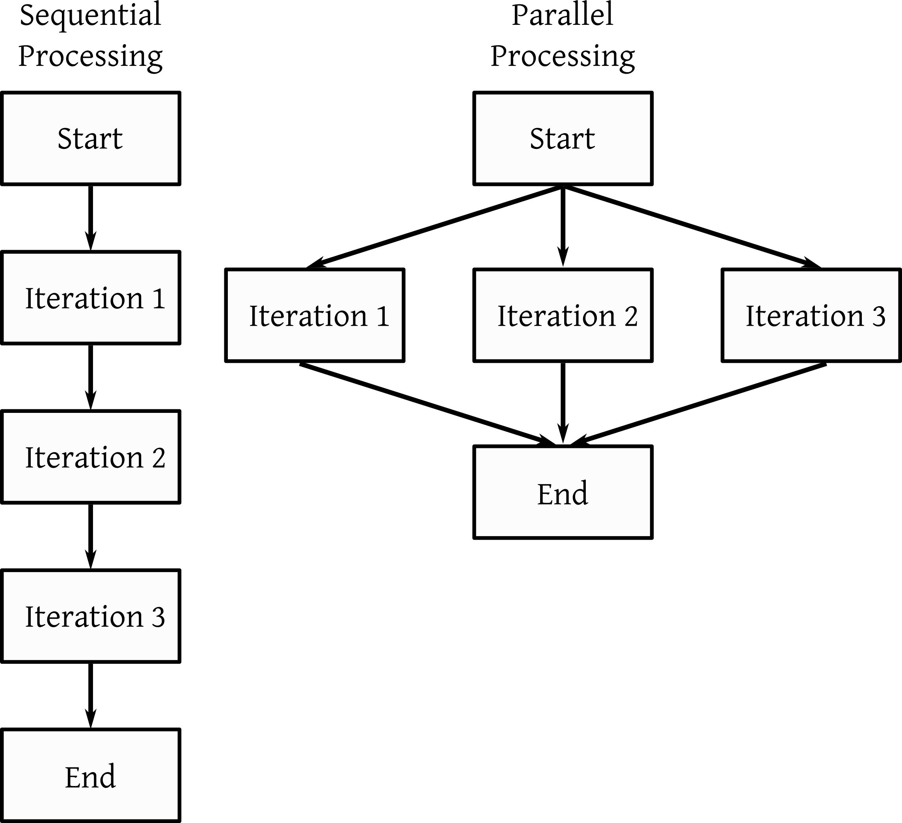
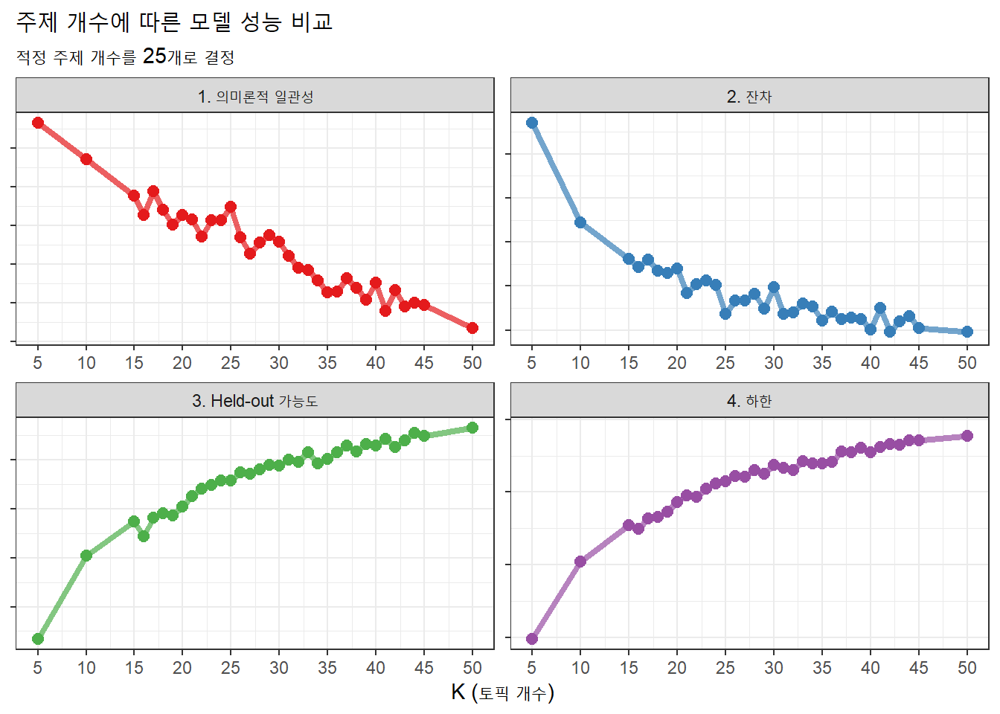
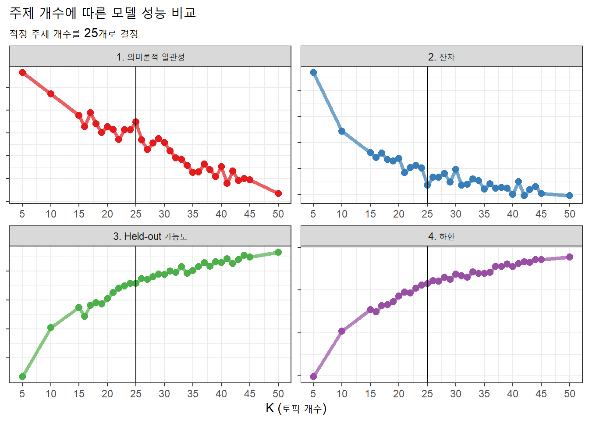

## 패키지 불러오기
pacman::p_load(
"tidyverse", "tidytext", "data.table", "ggplot2", "stm", "RColorBrewer",
"future", "furrr", "knitr", "rmarkdown")
db_record_1a <- fread(
"data/db_record_v2.csv",
select = c("id_f", "cons_text", "cons_text_posJoined_main") # ID와 상담 원문, 상담 주요 품사 열만 불러오기
)들어가기
토픽모델링에서 연구자가 사전에 지정하는 주제 개수를 결정하는 과정에 대해 다룬다.

1. 문서 전처리
1.1. 데이터 및 패키지 불러오기
여기에서 먼저 샘플 데이터를 다운로드한다. 100개 주거상담기록을 임의로 추출한 것이다.
필요한 패키지를 불러오고 샘플 데이터를 준비한다.
1.2. 희소단어 제거
희소단어 정의
희소단어는 분석 데이터에서 잘 등장하지 않는 단어를 말한다. 이 단어를 포함하면 분석 행렬은 희소성이 높은, 예를 들어 문서 n X 단어 m 행렬에서 수많은 0이 차지하는 행렬이 된다. 이는 처리 시간이나 정확도 측면에서 효율적이지 않아 모델링 전 제거해주는 것이 좋다.
단어 빈도 표
단어 빈도 분포를 보며 희소단어를 제거해보자. unnest_tokens를 활용하여 토큰을 띄어쓰기 기준으로 나누어주고 원문을 토큰화/나누어주고, count로 그 단어들을 센 후, 누적 비율을 구한다.
table_wordFreq <- db_record_1a %>%
unnest_tokens(word, cons_text_posJoined_main,
token = stringr::str_split, pattern = " ") %>% # 띄어쓰기 기준
count(word, sort = TRUE) %>% # 단어 개수 세기
mutate(prop = cumsum(n) / sum(n)) # 누적합 구하기’안내’가 83번으로 가장 많이 등장한 토큰이고, 전체 35%를 차지한다. 그 다음으론 ’신청’이 74건으로 2번째로 많이 등장했으며 ’안내’와 ’신청’은 전체 총 6.7%를 차지한다.
희소단어 기준
누적 비율로 희소단어 기준을 설정한다. 누적 비율은 90분위나 95분위, 99분위를 주로 사용한다. 여기서는 90분위보다 빈도가 적게 발생한 단어를 확인해보자.
table_wordFreq[prop >= 0.900] word n prop
1: 보통 1 0.9000429
2: 보호 1 0.9004719
3: 복용 1 0.9009009
4: 복지 1 0.9013299
5: 봄맞이 1 0.9017589
---
230: 활동 1 0.9982840
231: 황토 1 0.9987130
232: 회신 1 0.9991420
233: 효율 1 0.9995710
234: 후원 1 1.0000000적은 샘플로 빈도가 1개인 경우만 여기에 해당됐다. 따라서 빈도 1개 이하인 경우를 희소단어 기준으로 정한다.
희소단어 리스트
희소단어를 빈도로 무턱대고 제거하면 희소하지만 중요한 단어도 제거하게 된다. 따라서 사용자정의 사전으로 희소단어에 포함되더라도 제거되지 않도록 해야한다. 여기에서 사용자정의 사전은 다운 가능하다.
setdiff 차집합으로 희소단어에 포함되고 사용자정의 사전에 포함 안되는 단어 리스트를 추출한다.
list_userDefined <- fread("data/dict/dict_userDefined.txt")
list_wordRemoved <- setdiff( # 차집합
setDT(table_wordFreq)[n <= 1]$word, # 빈도 기준 희소단어
list_userDefined # 사용자정의 사전
)| x |
|---|
| 연기 |
| 주거상황 |
| 주거돌봄서비스 |
| 입주자격 |
| 자가 |
희소단어 제거
희소단어를 제거하는 코드는 아래와 같다.
db_record_f <- db_record_1a %>%
unnest_tokens(word, cons_text_posJoined_main, token = stringr::str_split, pattern = " ") %>% # 띄어쓰기 기준
# 희소 단어 제외
filter(!(word %in% list_wordRemoved)) %>%
# 제외한 단어들을 다시 이어 붙이기
group_by(id_f) %>%
summarize(cons_text_posJoined_main = toString(word)) %>% ungroup() %>%
mutate(cons_text_posJoined_main = str_remove_all(cons_text_posJoined_main, pattern = "//,|,")) %>%
filter(str_count(cons_text_posJoined_main, pattern = " ") > 0)2. 토픽모델링
2.1. 문서-단어 행렬
stm 패키지 textProcessor로 문서-단어 행렬을 만들어준다.
processed <- as_tibble(db_record_f) %>%
textProcessor(
documents = .$cons_text_posJoined_main, metadata = .,
lowercase = FALSE, # 소문자 고려하지 않음
removepunctuation = FALSE, # 문장부호 제거 X
removenumbers = FALSE, # 숫자 제거 X
removestopwords = FALSE, # 불용어 적용 X
stem = FALSE,
wordLengths = c(1, Inf), # 1글자 이상
language = "na"
)
out <- prepDocuments(
processed$documents,
processed$vocab,
processed$meta,
lower.thresh = 1,
upper.thresh = Inf)
summary(out)
docs <- out$documents; vocab <- out$vocab; meta <- out$meta2.2. 모델링
주제 개수 입력
2개~50개 미만 주제 개수 각각 모델링을 수행하기 위해, 주제 개수를 입력한다.
K = seq(2, 50, 1) # 주제 개수병렬처리 활용한 모델링
병렬처리로 다수 토픽모델링을 동시에 수행한다. 수행해야 하는 모델 개수가 많아 순차적으로 주제 개수가 많아서 1개 코어만 사용하면 시간이 오래걸리기 때문이다.

먼저 사용할 코어 개수를 지정한다. multisession은 병렬처리를 workers는 사용할 멀티코어 개수다.
plan(multisession, workers = 2)future_map로 병렬처리를 진행한다. 함수를 살펴보면 모델링 하기 전에는 ‘STM_start_주제개수.csv’ 파일을 만들고, 모델링 이후 모델 성능을 ’stm_fitted_주제개수.csv’로 저장한다.
future_map(
K, function(x){
gc()
fwrite(
data.table(x = x),
paste0("result/", "stm_start", "_", x, ".csv"))
stm_fitted <- searchK(
docs, vocab, x,
data = meta
)
fwrite(stm_fitted$results,
paste0("result/", "stm_fiited_", x, ".csv")
)
}
)3. 주제 개수 확정
실제 데이터로 위 과정을 거친 모델 성능 결과는 여기에서 다운로드 가능하다.
3.1. 모델성능 결과 불러오기
모델 성능 결과가 모인 폴더 내에서 ’stm_fiited’이 들어간 파일을 읽고 그래프로 보일 수 있게끔 작업한다.
output_mergeSearchK <- rbindlist(
map(list.files(path = paste0("result"), pattern = "stm_fiited", full.names = TRUE), fread)) %>%
pivot_longer(cols = c("semcoh", "heldout", "residual", "lbound"),
names_to = "index", values_to = "value", values_drop_na = TRUE) %>%
mutate(index_explain = case_when(index %in% c("residual", "lbound") ~ "낮을수록 좋음",
TRUE ~ "높을수록 좋음"),
index_factor = factor(index, levels = c("semcoh", "residual", "heldout", "lbound"),
labels = c("1. 의미론적 일관성", "2. 잔차", "3. Held-out 가능도", "4. 하한")))3.2. 성능 그래프
그래프로 만드는 작업은 아래와 같다.
output_mergeSearchK %>%
ggplot(aes(K, value, color = index_factor)) +
geom_line(size = 1.5, alpha = 0.7, show.legend = FALSE) +
geom_point(size = 2.5, alpha = 1, show.legend = FALSE) +
# geom_vline(xintercept = 25) + # 최종 주제 개수
facet_wrap(~ index_factor, scales = "free") + scale_x_continuous(
breaks = seq(5, 50, 5), limits = c(5, 50)) +
scale_color_manual(values = brewer.pal(name="Set1", n=4), guide="none") +
labs(x = "K (토픽 개수)",
y = NULL,
title = "주제 개수에 따른 모델 성능 비교",
subtitle = "적정 주제 개수를 25개로 결정"
) +
theme_bw() +
theme(axis.title.y=element_blank(),
axis.text.y=element_blank()) 
3.3. 최종 주제 개수 결정
위 그래프를 보고 최종 주제 개수는 25개로 결정했다. 의미론적 일관성과 가능도는 클수록, 잔차와 하한은 낮을수록 좋은 점을 고려해 25개가 최적의 개수로 선정했다. 이를 표시하면 아래와 같다.
output_mergeSearchK %>%
ggplot(aes(K, value, color = index_factor)) +
geom_line(size = 1.5, alpha = 0.7, show.legend = FALSE) +
geom_point(size = 2.5, alpha = 1, show.legend = FALSE) +
geom_vline(xintercept = 25) + # 최종 주제 개수
facet_wrap(~ index_factor, scales = "free") + scale_x_continuous(
breaks = seq(5, 50, 5), limits = c(5, 50)) +
scale_color_manual(values = brewer.pal(name="Set1", n=4), guide="none") +
labs(x = "K (토픽 개수)",
y = NULL,
title = "주제 개수에 따른 모델 성능 비교",
subtitle = "적정 주제 개수를 25개로 결정"
) +
theme_bw() +
theme(axis.title.y=element_blank(),
axis.text.y=element_blank()) 